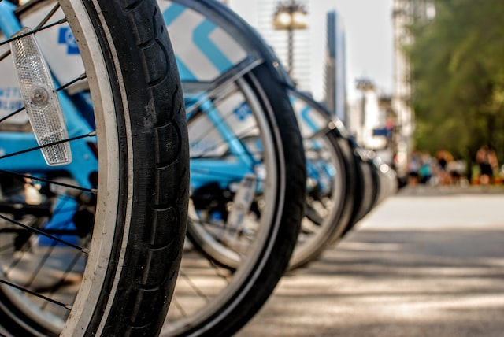
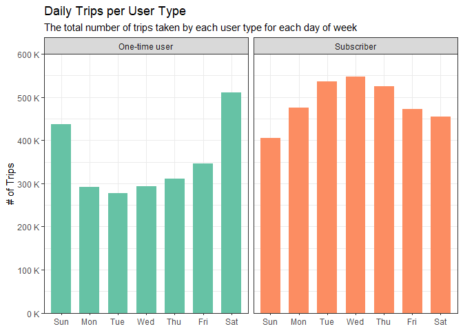
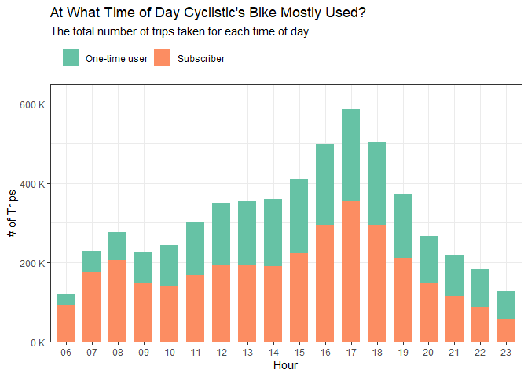
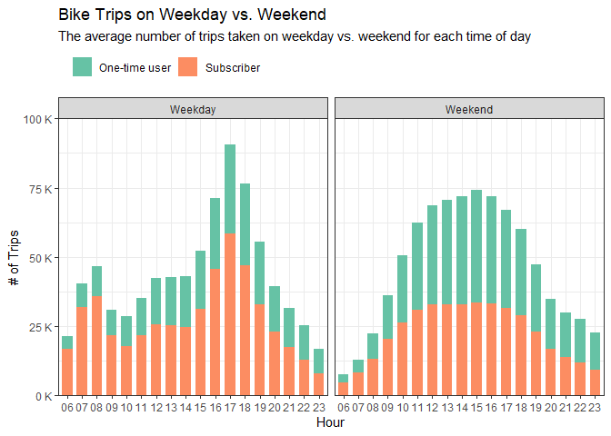
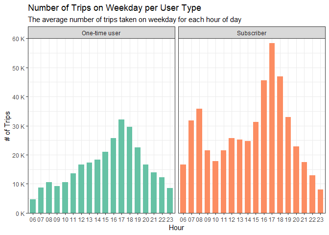
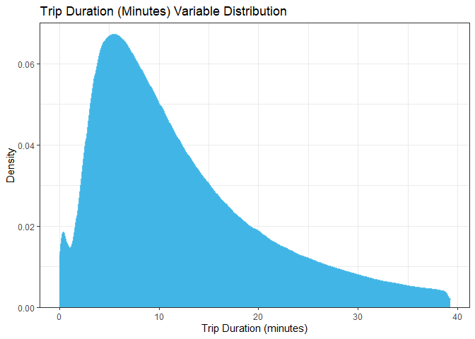
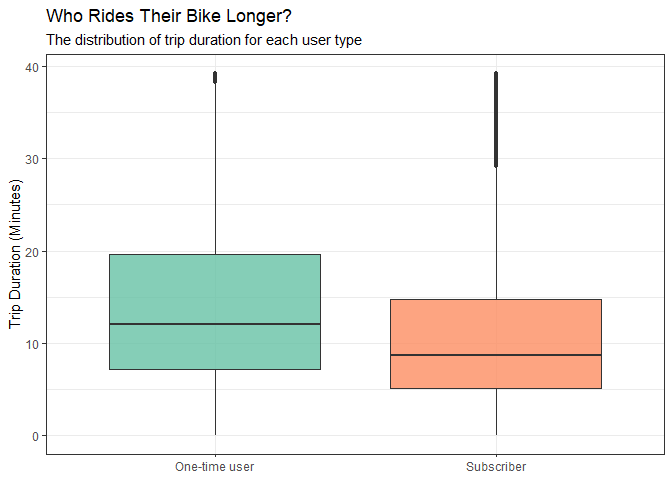
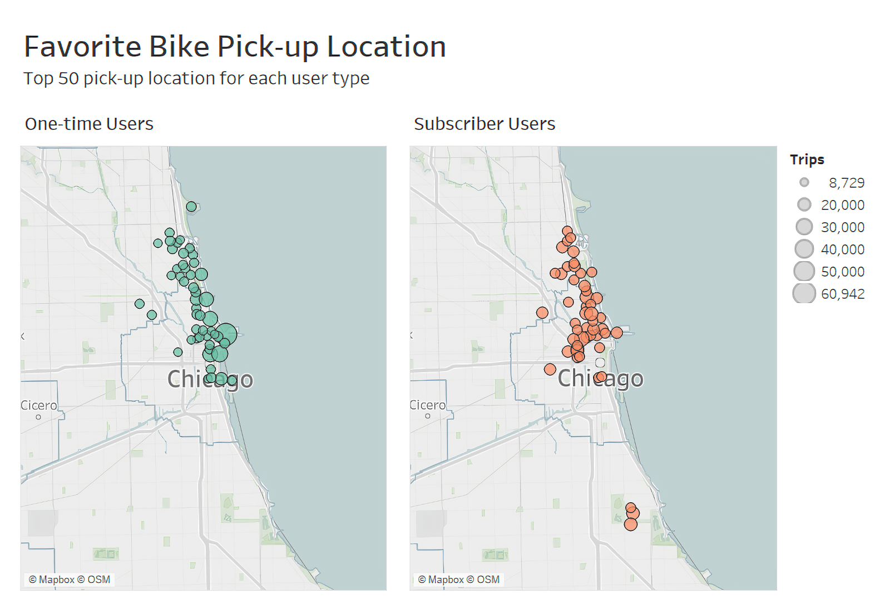

Cyclistic - Analyzing User Behavior
Understanding user behavior to create data-driven marketing campaigns.
By Taufik Achmad in Project
October 31, 2022

📷 Clique Studio/Unsplash
Introduction
This project is my attempt to solve the first case study from the Google Data Analytics Professional Certificate Capstone Projects on Coursera that you can access here. I really enjoy working on this project because not the challenge on this project is ranging from the size of the data provided, to the working on how to create a meaningful analysis to solve the main problem itself.
This project will be about analyzing user behavior on how they use the service of a fictional bike-sharing company based in Chicago, called Cyclistic.
If you have any question regarding this project, don’t hesitate to contact me through email here, or send me a message on LinkedIn here.
Background
Cyclistic is a bike-sharing company that launched back in 2016. Since then, the program has grown to a fleet of 5,824 bicycles that are geo-tracked and locked into a network of 692 stations across Chicago. The bikes can be unlocked from one station and returned to any other station in the system at anytime.
Until now, Cyclistic’s marketing strategy relied on building general awareness and appealing to broad consumer segments. One approach that helped make these things possible was the flexibility of its pricing plans: single-ride passes, full-day passes, and annual memberships. Customers who purchase single-ride or full-day passes are referred to as one-time users. Customers who purchase annual memberships are Cyclistic members or subscriber users.
Business Problem
Cyclistic’s finance analysts have concluded that annual members are much more profitable than casual riders. Although the pricing flexibility helps Cyclistic attract more customers, they believe that maximizing the number of annual members will be key to future growth. Rather than creating a marketing campaign that targets all-new customers, they believe there is a very good chance to convert casual riders into members. They notes that casual riders are already aware of the Cyclistic program and have chosen Cyclistic for their mobility needs.
They have set a clear goal:
Design marketing strategies aimed at converting casual riders into annual members.
In order to do that, however, the marketing analyst team needs to better understand several things:
-
How do annual members and casual riders differ?
-
Why casual riders would buy a membership?
-
How digital media could affect their marketing tactics?
The team is interested in analyzing the Cyclistic historical bike trip data to identify trends. And for this project, I’m going to work to answer the first question, which is:
How do annual members and casual riders differ?
Analysis
The data to support the analysis is coming from a real bike-sharing company that is also based in Chicago called Divvy. The data have been made available to be accessed publicly through this link.
The data is organized by monthly trip data in *.csv format that is compressed in a *.zip format for each month. Meaning, each *.csv file contains the historical trip data for a specific month. For this analysis, we’re going to need the historical trip data from the past 12 months, which means the trip data from September 2021 to August 2022 will be used.
Trips per User Type
Let’s look at the number of trips taken by each user type for the past 12 months. Throughout this analysis, the annual members will be called subscriber users and casual riders will be called one-time users. This is done to help understanding the result better.
| user_type | rides_num | percentage |
|---|---|---|
| Subscriber | 3414493 | 58.04% |
| One-time user | 2468415 | 41.96% |
We can see that subscriber users ride more bike for the past 12-month, which are 58% or 17% higher than the one-time users.
Trips per Months
Let’s add some level of detail to show how the number of trips differ per month.

Here, we can see that the number of rides rose from January to July, and continuously decreased after that. The number of rides taken in June - September is the highest throughout the year, with more than 750 thousand bike rides per month, or more than 50% of the total bike rides are taken during these months. Besides that, May and October also have a quite high number of bike rides.
Looking at the individual user type can help us understand their behavior on a monthly level.

We can see conclude that:
- There are more rides by the subscriber users each month.
- Both user type has the same pattern in term of the number of bike ride they take each month.
- The number of rides by one-time users increasing significantly on May.
Trips per Day
Next, let’s see how each user type use their bike on daily level.

We can see that there are high number of bike rides on weekend, especially on Saturday. Other than that, the number of rides are quite consistent along the week.
Next, let’s see the breakdown for each user type.

From this visualization we can see that:
- There are differences between each user type on how they use their bike on day-to-day basis. Along the week, more rides are taken by the subscriber users. Meanwhile, more rides are taken on the weekday by the one-time users.
- The high number of rides by subscriber users along the week could possibly mean they use their bike to commute to the workplace.
- The high number of rides by one-time users on the weekend could indicate that riders use their bike on this particular days for sightseeing.
Trips per Hour
This analysis can give us an overview of what time of the day each user type use their Cyclistic’s bike.

The gradual increase of bike rides after 08:00 until 17:00 could indicate the rides taken in this particular time are to commute to workplace/school. The peaks at 08:00 and 17:00 could also support that claim.
Weekday vs. Weekend Analysis
From the day-to-day analysis, we can see that the number of trips taken by the subscriber users is high during the week, while on the weekend there are more trips taken by the one-time users.
Let’s breakdown the hourly result from the previous analysis to show how each user type uses their bike on the weekday vs. on the weekend.

The pattern for the weekday showing the same result as the previous result on the number of trips per hour. On the other hand, the result for the weekend trips shows the number of trips is gradually increasing along the day and hit the peak at around 15:00.
We can look at each weekday and weekend result to better understand the different. For the weekday, we can look at the chart below to understand how each user type uses their bike.

For the weekday, subscriber users take more trips than the one-time users. Other than that, each user type have the same behavior. The peaks at 08:00 and 17:00 and the gradual increase of bike rides between those hours could possibly mean they use their bike to get to work/school. Data on the age group of each riders could help to clarify this statement.
For the weekend, we can look at the chart below to understand how each user type uses their bike.

For the weekend, the behavior on how each user types use their bike are also the same. But not like on the weekday, the average number of rides taken by the one-time users are higher especially after 10:00. The high number of rides from both user types in middle of the day could indicate that people use their bike for sightseeing.
The high number of trips taken by the one-time users even on the weekday could support the claim that Cyclistic’s team made about casual users or the one-time users awareness on their bike-sharing service.
Trip Duration Analysis
First, let’s see the basic statistic on trip duration data after removing outliers.
| average_duration_minutes | median_duration_minutes |
|---|---|
| 12.23652 | 9.933333 |
On average, each trips taken from the past 12-months data were about 12 minutes long.

The density plot above is right skewed, meaning there are rides that are far longer than the average rides duration.
Let’s now see the trip duration for each user type.
| user_type | mean_trip_duration_min | median_trip_duration_min |
|---|---|---|
| One-time user | 14.16656 | 12.05 |
| Subscriber | 10.99073 | 8.70 |
Here we can see that even though the subscriber users ride the bike more, the trip duration of one-time users are higher than them, which is 14 minutes per trips, whereas the average duration per trips for subscriber users is about 10 minutes.

By looking at the previous result on how each user type use their bike on daily basis, this result should make sense. The high number of trips by subscriber users along the week could indicate that they use their bike to commute to work. Lower trip duration from the data above meaning getting to their destination fast is their priority.
Pick-up Location Analysis
Let’s analyze the popular bike pick-up location for each user type. I’m going to use Tableau here to help showing the result.

From the visual above, we can conclude several things:
- The top bike pick-up location for subscriber users are more distributed along each point. This can be seen by the size of each circle that has quite similar size with the other. Meanwhile, we can see several spots with circle that is larger than the other circles on the top pick-up locations for the one-time users.
- The top pick-location are concentrated mainly on the south and the central area of the city.
- The top pick-up location for one-time users are more concentrated towards the area where most of the city’s tourism attractions are located, which is on the central area. On the other hand, The top pick-up location for the subscriber users are more concentrated toward the western area of the city.
- On the subscriber users’ result, the several spots on the bottom are located near the University of Chicago. This means, using bike sharing is quite popular for the college students.
Result
Some actions/recommendations from this analysis are:
-
Perform marketing campaign on high trips months, which is from May - October.
-
Add subscription variation to include 6-months period subscription.
-
Create a special promotion price for university students.